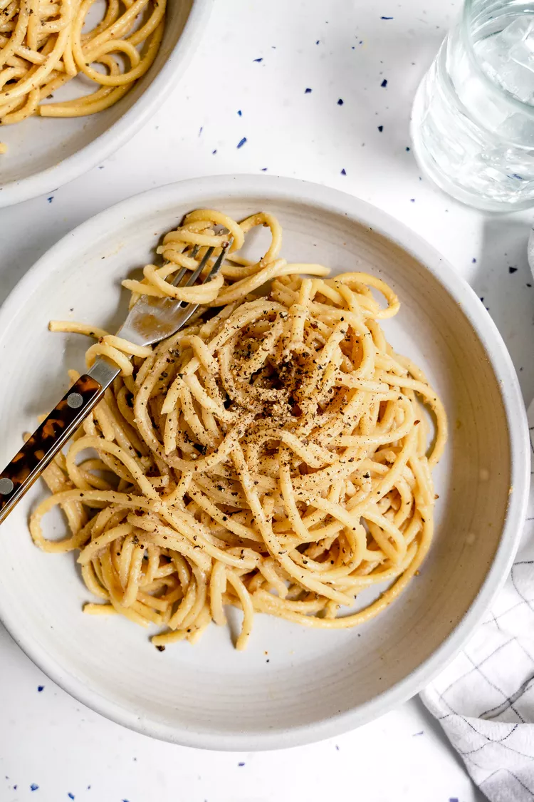

Vegan Cacio e Pepe

Cacio e pepe is a simple, classic Roman pasta dish. This easy vegan recipe
swaps the cheese for cashew butter, miso, and nutritional yeast for a
satisfying supper.
Ingrediants
- 12 ounces bucatini pasta
- 1 1/2 teaspoons kosher salt, plus more to taste
-
1 teaspoon fresh, coarsely ground black pepper, plus more to taste
-
1/3 cup unsweetened cashew butter (raw and untoasted, if possible)
- 1/4 cup nutritional yeast
- 2 teaspoons miso
Steps
-
Cook the pasta: Bring a large pot of water to a boil. Add the pasta and
salt. Cook until al dente (according to the package directions). Reserve
1 1/2 cups of pasta water and drain the pasta in a colander.
-
Toast the black pepper: Meanwhile, add the coarsely ground pepper to a
large, deep skillet over medium-low heat and toast until fragrant, about
a minute. Transfer the pepper to a medium bowl. You’ll add the pasta
back to this skillet, so make sure it is large enough.
-
Make the sauce: Add the cashew butter, nutritional yeast, and miso to
the bowl with the pepper. While whisking, slowly pour in 1 cup of the
reserved, hot pasta water into the cashew butter mixture. Whisk until
creamy and well combined.
-
Combine and serve: Add the drained pasta and sauce to the skillet over
medium-low heat. Stir and toss constantly until the sauce thickens—this
may take a few minutes. If this sauce becomes too thick, add more pasta
water, a small splash at a time. Season with salt to taste and garnish
with more pepper. Serve immediately. Vegan cacio e pepe is best served
fresh. Any leftovers can be stored in an airtight container in the
fridge for up to 3 days. To reheat, add a splash of water or nondairy
milk and place in a skillet over medium heat and cook until warmed
through.